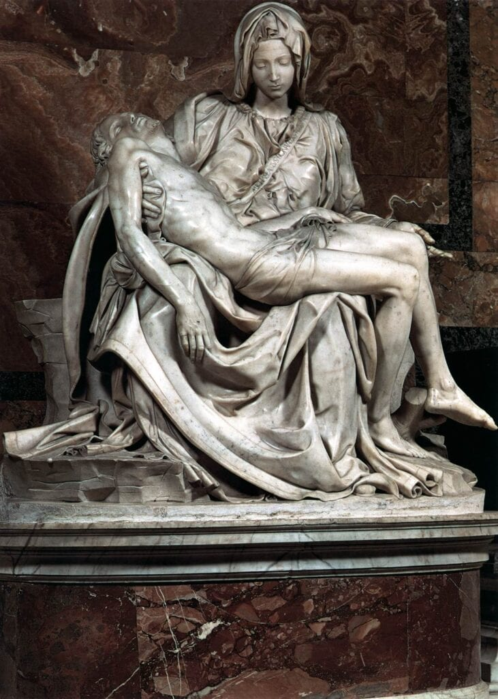
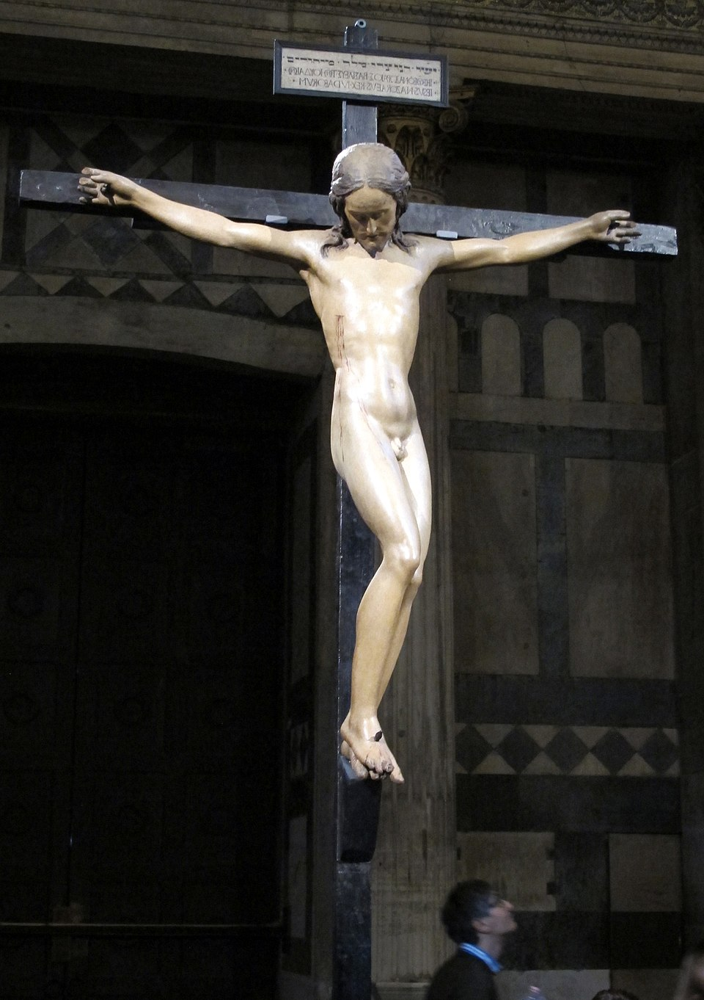

The Pieta by Michelangelo
Welcome to our sculpture gallery!

Sculpture is the branch of the visual arts that operates in three dimensions. It is one of the plastic arts. Durable sculptural processes originally used carving (the removal of material) and modelling (the addition of material, as clay), in stone, metal, ceramics, wood and other materials but, since Modernism, there has been an almost complete freedom of materials and process. A wide variety of materials may be worked by removal such as carving, assembled by welding or modelling, or molded or cast.
